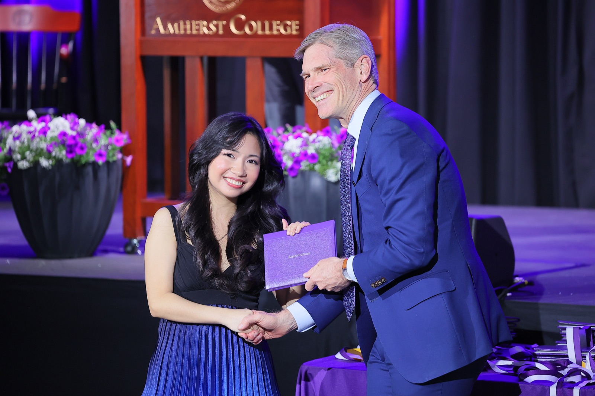

erika salvador

contact me via email or read my student blog
I am an economics student and research assistant at Amherst College. I am interested in development economics, public finance, and applied econometrics, with a focus on the Philippines.
employment
-
Research Associate Intern June–August 2026
Innovations for Poverty Action (IPA)
Embedded with Philippine government partners, including the Department of Education (DepEd) and the Department of Migrant Workers (DMW).
-
Schupf Social Sciences Research Fellow June–August 2025
Faculty-mentored research fellowship at Amherst College during the summer after my first year.
research experience
- Research Assistant to Prof. Caroline Theoharides (Economics) Fall 2024–present
- Research Assistant to Prof. Nicholas Horton (Statistics) Fall 2025–present
- Research Assistant to Asst. Prof. Jakina Debnam-Guzman (Economics) Fall 2026–present
- Research Assistant to Prof. Susan Godlonton* (Economics) Fall 2024–Spring 2025
- Research Assistant to Assoc. Prof. Katharine Correia (Statistics) Fall 2024–Spring 2025
* Faculty supervisor from an institution outside Amherst College.
teaching experience
-
ECON 360: Econometrics Fall 2026
Teaching Assistant to Asst. Prof. Mesay Gebressilasie
-
Mathematics Fellow Fall 2026–present
MATH 350: Groups, Rings, and Fields; Teaching Assistant to Asst. Prof. Miriam Kuzbary and Assoc. Prof. Nathan Pflueger
-
Statistics and Data Science Fellow Fall 2025–present
Fellow for all sections of STAT 135 (Introduction to Statistics via Modeling), STAT 230 (Intermediate Statistics), and STAT 231 (Data Science), supporting 100+ students per semester across five sections.
-
ECON 360: Econometrics Spring 2025
Teaching Assistant to Prof. Caroline Theoharides
education
-
Amherst College
selected coursework
economics
- International Trade
- Microeconomics
- Macroeconomics
- Econometrics
- Advanced Behavioral Economics
- Game Theory and Applications
- Education and Human Capital in Developing Economies
- Applied Econometrics
- Applied Microeconomics Theory (U/REEC 711)
mathematics
- Multivariable Calculus
- Mathematical Reasoning and Proof
- Linear Algebra
- Data in Policy Work
- Functions of a Complex Variable
- Groups, Rings, and Fields
- Introduction to Analysis
- Galois Theory
- Differential Geometry
skills
Research tools: R, Python, Stata, SQL, Excel, GitHub
Languages: Filipino (native), English (fluent)